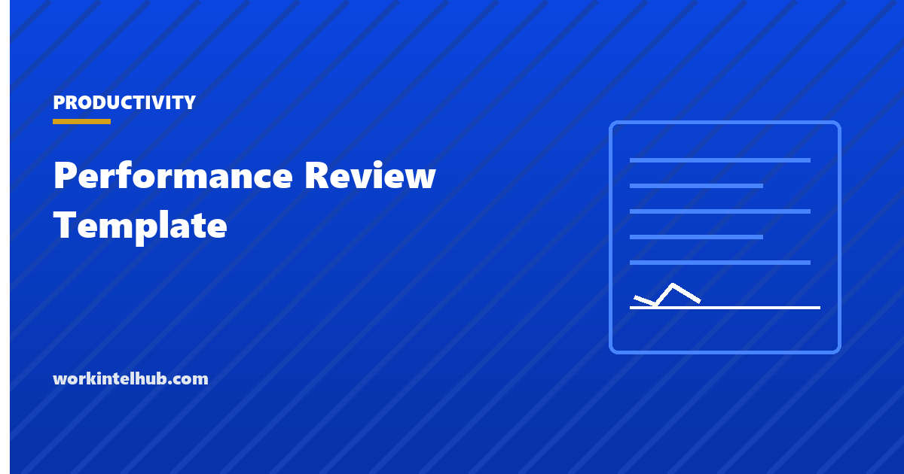

Performance Review Template

Most performance review forms collect adjectives. The template below collects evidence, which is the only thing that survives a disagreement about a rating six months later.
Copy it as it stands. The notes after it explain why each section is worded the way it is, and which of the usual sections have been deliberately left out.
The template
1. What did this person deliver?
Three to five specific things, each with the outcome rather than the activity. Not "worked on
the migration" but "led the migration, delivered two weeks late, no customer-visible
incidents".
2. What did they do that nobody asked them to?
The clearest single signal of the difference between competent and exceptional, and the one
most forms never ask for.
3. Where did the work fall short, and what was the cause?
Separate what was within their control from what was not. A missed date caused by a
dependency is a different conversation from a missed date caused by an estimate.
4. What did they change after feedback?
This is the question that measures growth rather than talent. It requires that feedback was
actually given, which is why it also audits the manager.
5. What do others say?
Two or three specific comments from people who worked with them, with names attached in your
notes even if not in the form.
6. What is the one thing that would make the biggest difference next period?
One. A list of six development areas is a list of none.
7. What does this person need from me?
Answered by the manager, in writing, and revisited next period.
Manager: [name] Employee: [name] Date: [date]
Seven questions, all open. It takes longer to complete than a rating grid and produces something a person can act on, which is the trade the form is making.
Why it is built this way
Evidence before judgement. Questions one to three ask what happened before anyone characterises it. A form that opens with a rating invites the rating to be chosen first and the evidence assembled to fit.
Cause separated from outcome. Question three is the difference between a review that improves performance and one that assigns blame. A great deal of what looks like underperformance is a dependency, an unclear brief or an estimate nobody challenged.
The manager is on the form. Questions four and seven make the manager's contribution visible. Gallup reported in 2026 that global engagement declined for a second consecutive year with the sharpest fall among managers, and a review process that never asks what the manager did is measuring half the system.
One development priority. Naming six areas guarantees none of them changes.
The rating scale problem
Numeric ratings are the most common feature of review forms and the one that causes the most trouble, for reasons that are structural rather than fixable by better wording.
| Problem | What happens |
|---|---|
| Central tendency | Almost everyone lands on the middle score, so the scale carries no information |
| Recency | The last six weeks dominate a twelve-month rating |
| Forced distribution | A fixed curve makes a rating depend on colleagues rather than on the work |
| Anchoring to pay | Once a number determines a rise, it stops describing performance and starts negotiating |
If you must have a rating, keep it to three points, apply it to specific outcomes rather than to the person, and keep it out of the same conversation as pay. The measures used for coaching and the measures used for compensation come under different pressure, which our guide to performance tracking covers.
Where the evidence should come from
The most common failure is not the form. It is that nobody collected anything for eleven months and then wrote a review from memory.
- A running note per person, added to monthly. Three lines. This single habit does more for review quality than any template.
- Outcomes, from wherever they already live. Shipped work, resolved tickets, closed deals, published documents.
- Quality signals. Rework, escalations, reopened items.
- What colleagues say, gathered specifically rather than through a generic 360.
What should not be evidence: hours logged, activity scores, or anything from monitoring software. Those measure presence and input rather than contribution, and using them in a review is how a measurement system becomes a trust problem. Our page on why productivity metrics fail knowledge teams covers what happens next.
Running the conversation
- Send the completed form before the meeting. Reading and reacting at the same time produces a defensive conversation. A day is enough.
- Have the person go first on questions one to three. You will learn where their view differs from yours, which is the useful part.
- Separate pay into its own meeting. Nothing said about development is heard while a number is pending.
- Agree one thing, in writing, that changes. With a date.
- Answer question seven out loud. What the person needs from you, said in the room, is what makes the process reciprocal.
The American Psychological Association's 2024 Work in America survey, conducted among 2,027 employed US adults, found 43 per cent reporting lower psychological safety at work, and that those employees were far more likely to describe their workplace as toxic. A review conducted in that environment collects what people think is safe to say, which is worth knowing before treating the answers as data.
Key takeaways
- Collect evidence before judgement. A form that opens with a rating invites the rating to be chosen first.
- Separate what was within the person's control from what was not, or the review assigns blame instead of improving performance.
- Ask what they did that nobody asked for. It is the clearest signal of the difference between competent and exceptional.
- Put the manager on the form. A process that never asks what the manager contributed measures half the system.
- Name one development priority. Six areas guarantees none of them changes.
- Rating scales suffer central tendency, recency and forced distribution. Three points at most, applied to outcomes rather than people.
- Keep pay in a separate conversation. Nothing about development is heard while a number is pending.
- Never use hours logged or activity scores as review evidence. They measure presence, not contribution.
Frequently asked questions
What should a performance review template include?
What the person delivered with outcomes rather than activity, what they did that nobody asked for, where work fell short and why, what changed after feedback, what colleagues say, one development priority, and what the person needs from their manager. Open questions rather than rating grids.
Should performance reviews use a rating scale?
If you use one, keep it to three points, apply it to specific outcomes rather than to the person, and keep it out of the pay conversation. Numeric scales suffer central tendency, recency bias and, where a curve is enforced, make a rating depend on colleagues rather than on the work.
How often should performance reviews happen?
Formally, twice a year is enough for most roles, with a short running note added monthly so the review is not written from memory. Annual-only reviews are dominated by the last six weeks, which is a recency problem no template can fix.
What evidence should a performance review be based on?
Outcomes from wherever they already live, quality signals such as rework and escalations, and specific comments from colleagues who worked with the person. Not hours logged, activity scores, or anything from monitoring software, which measure presence rather than contribution.
Should pay be discussed in the performance review?
Separate them. Once a number determines a rise, it stops describing performance and starts negotiating, and nothing said about development is heard while a compensation decision is pending. Run the development conversation first and the pay conversation later.
What is the biggest mistake in performance reviews?
Writing them from memory. The form is rarely the problem; the problem is that nothing was recorded for eleven months. A running note of three lines a month per person improves review quality more than any template change.
How do you review someone whose work missed its dates?
Separate cause from outcome. A date missed because of a dependency, an unclear brief or an estimate nobody challenged is a different conversation from one missed through the person's own choices, and treating them the same is how a review process loses credibility.